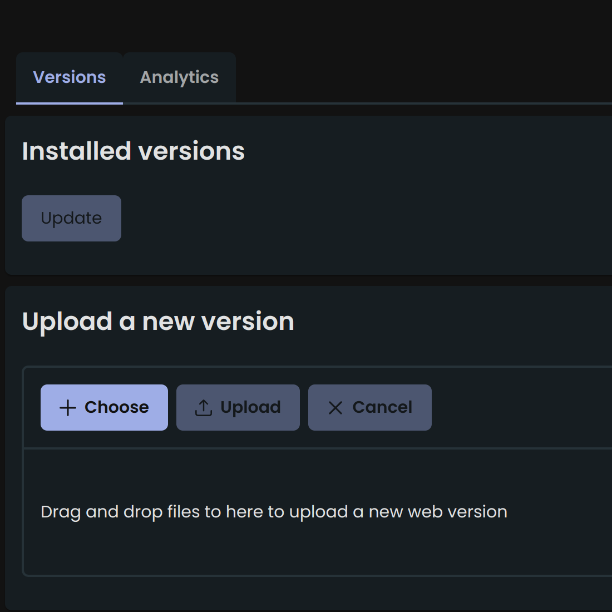
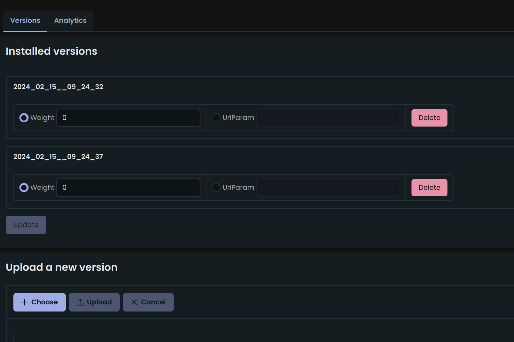
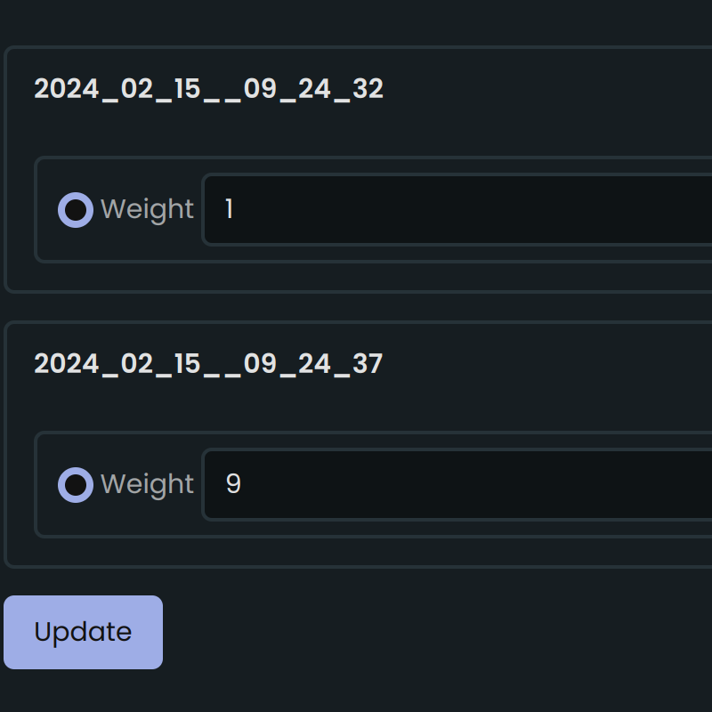
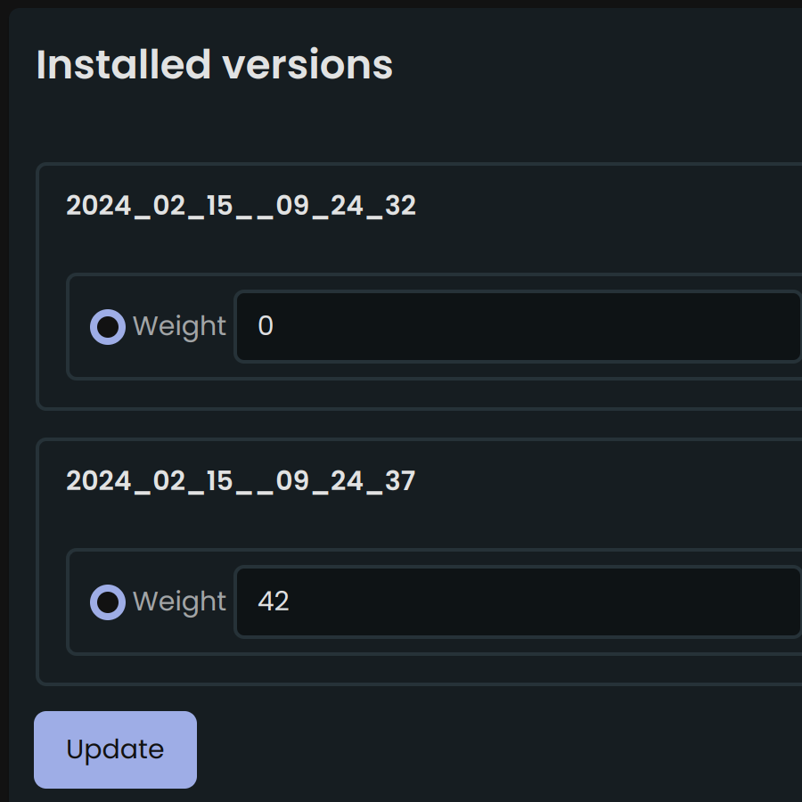
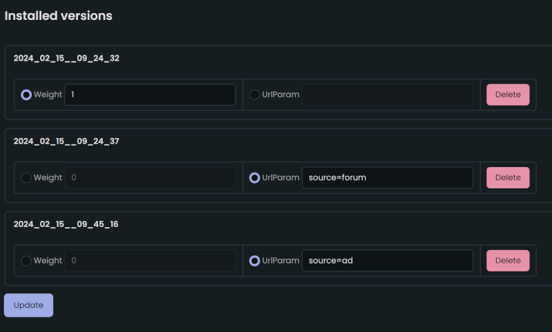

Web A/B testing and traffic splitting
Serving multiple versions of the same site can be useful for various reasons:
- A/B testing: Split your visits into two different versions and compare their engagement.
For example, some people prefer reading longer text while others prefer viewing images. Some like a light
and minimalistic look, while others prefer dark mode.
- Splitting traffic by source: When you share a link to your website, you can add a URL
parameter like "www.site.com/?source=ad" or "www.site.com/?source=forum". This allows you to compare user
engagement and conversions based on the referral source.
- Preventing broken link errors: When you want to upload a new version of your site, some
visitors may still have the old version open in their browsers. You don't want to lose them when they click
on a link that no longer exists in the new version. Instead, you can smoothly transition new users to the
updated version while still serving the old version to current users. Once everyone has switched over to the
new version, you can safely delete the old one. This is especially important for Single Page Applications
(such as Angular, Vue, etc.) where page elements are often loaded lazily, as a broken link can result in an
unpleasant error message for the user.
Uploading versions of your site

Before doing anything, you need to upload one or more versions. You can upload the same version
multiple times. Click "Choose", select the zipped website folder and click "Upload".

A/B testing
For A/B testing, select 'Weight' and assign some numbers. If you want traffic to be split equally,
then make all numbers the same. If you want 10% traffic to go to one version and 90% traffic go to the other,
give them numbers like 1 and 9, or 10 and 90. Don't forget to click 'Update' when done.

Rolling a new version
Getting users off the old version is done by assigning 0 weight to the old version, and any higher
number to the new one.

This way all new users will be directed to the new version and the old version can be deleted after
a while.
Split by traffic source
Imagine you're running an ad campaign and also wrote about your site on some forum. You want to see
the difference between users' behavior coming from different places.

Version 2024_02_15__09_24_32 is there to handle traffic without any URL parameters. Other versions will handle
traffic from specific sources.